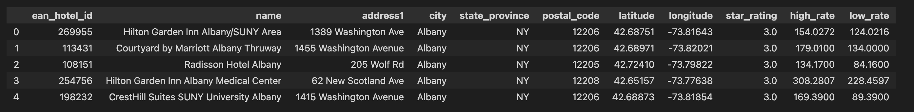
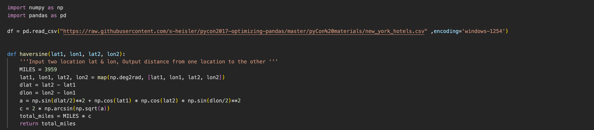
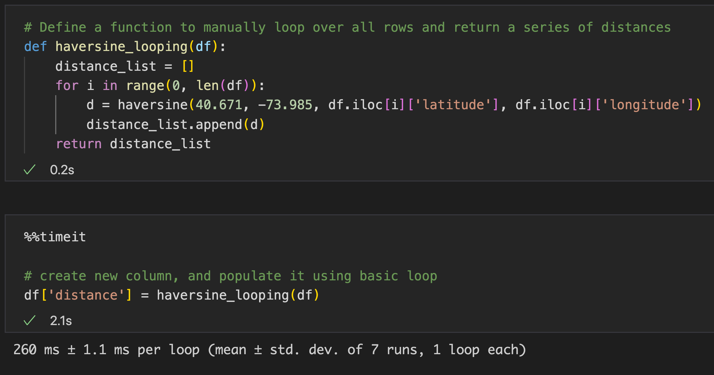
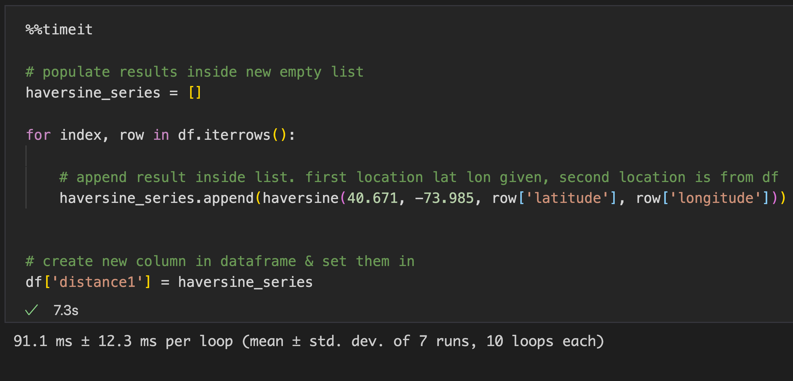
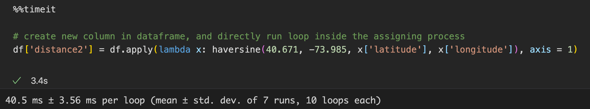
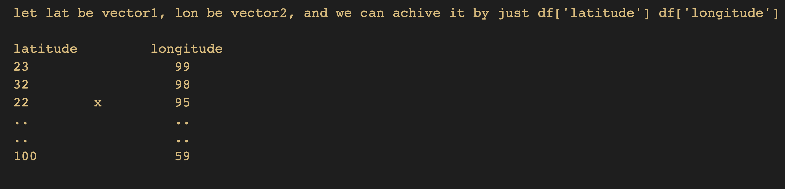
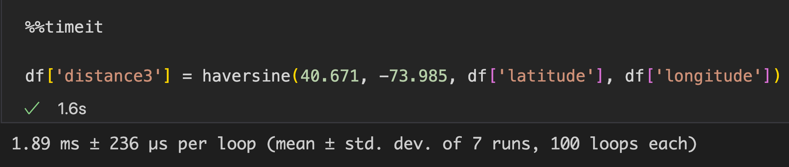
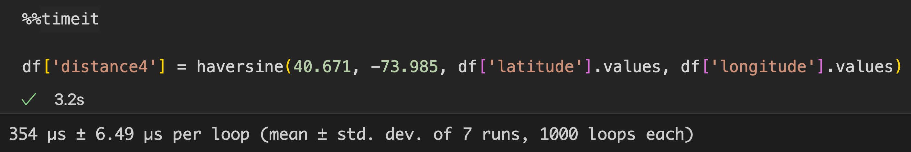

TLDR; utilize numpy hidden hacks more often (which here is, WAY faster loop) , and replace all for-loop to .apply() for good habit.
This article will be divided into 3 segments :
- Scenario : The problem statement
- Result : How are we tackling the problem ?
- Call-To-Action : What's the solution of the problem ?
Scenario
One of biggest reason why we pick up python for data analysis is because excel can't handle large dataset (i mean, excel can, but if your manager is under your neck and need answer ASAP, just loading the data takes hours, let alone analysing it).
We'll be discussing on for-loops only, it's good for small size data, but if its large, it will take long time too.
Hence, given a dataset of different locations latitude & longitude of 1000+ locations, we'll calculate the distance between where we are now to these different locations, and store the result in the dataframe.

Here, we'll show the time taken to use basic for-loop, and we show how can we improve them drastically. Below the sneak-peek of the data
Result
Heads up that i will be deliberately posting the code image, so that you won't be copy pasting. type it out along as it helps to train your muscle memory!
Below is the code on how are we calculating distance from where we are to the locations in the dataset
We'll be introducing 5 different kind of ways to solve this problem, from slowest to fastest.
- Basic looping
- Speed : 260 ms ± 1.1 ms per loop (mean ± std. dev. of 7 runs, 1 loop each)
- Loop using .iterrows()
- Speed : 91.1 ms ± 12.3 ms per loop (mean ± std. dev. of 7 runs, 10 loops each)
- Loop using .apply()
- Speed : 40.5 ms ± 3.56 ms per loop (mean ± std. dev. of 7 runs, 10 loops each)
- Vectorization with pandas series
- Speed : 1.89 ms ± 236 µs per loop (mean ± std. dev. of 7 runs, 100 loops each)
- Vectorizaton using numpy arrays
- Speed : 354 µs ± 6.49 µs per loop (mean ± std. dev. of 7 runs, 1000 loops each)
We'll be creating new column in the dataframe, and populate it using basic for-loop, shown the speed of it too
We'll be populating results inside new empty list, then create new column in dataframe & set them in. speed shown too.
In short, it's basic for-loop, BUT using lambda instead & directly assign it to the newly-created column in the dataframe
Footnote on this one is that, the structure of this is relatively closest to basic for-loop, and yet is much faster. i'd recommend for you to start replacing all for-loop and using this .apply() instead
Oversimplifying it, when you see vectorization, think 'multiplication of two variables, with a twist'
The idea behind here is explained in picture below. As we can noticed, that we can actually achieve this by 'replacing' loop entirely, and using vectorization concept.
Below is the code & the speed of result
Here, it's using pandas series, BUT we specificall for .values only, hence faster (converting from dataframe to array indirectly)
Call-To-Action
Looking at the speed of each, we can see that using numpy array is the best to make 'loop' faster, that it process 649x faster than normal loop! (230ms / 0.354ms)
In any of your future looping problem, consider putting those values inside numpy array (or pandas series), do this, and convert it back to whatever format you originally need (or don't, because numpy & pandas might've got your back already. look up their capabilities before forgetting them!)
In short, we use 'numpy vectorization' concept in order to handle loop-problems that involves large datasets
Final words from Dwi
You can find the codes here.
Explore numpy more, and replace all for-loop to .apply() for good habit (and faster code)